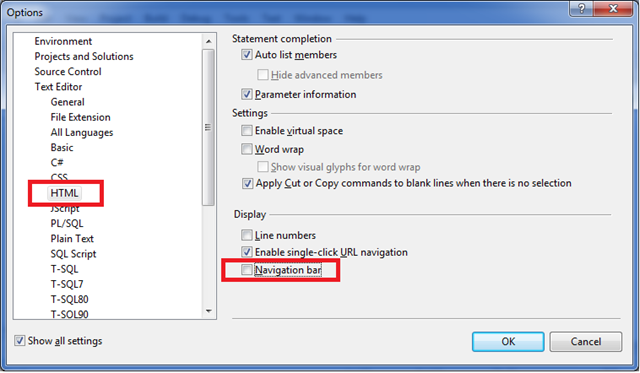

Estos desplegables se conocen como «Barra de Navegación», y en el editor de VS 2008 nos permiten navegar entre las funciones y métodos que se definen en el HTML. Se incluyen tanto funciones de cliente de JavaScript defindias en el .aspx/.html, y en métodos de servidor definidos en modo de un solo archivo (sin code behind).
|
Personalmente, no encuentro esta barra muy útil – ya que intento no definir funciones JavaScript dentro del HTML (sino que uso las técnicas de JavaScript no intrusivo y pongo todo mi código JavaScript en archivos separados), y normalemente uso el code-behind para el código de servidor.
|
 |